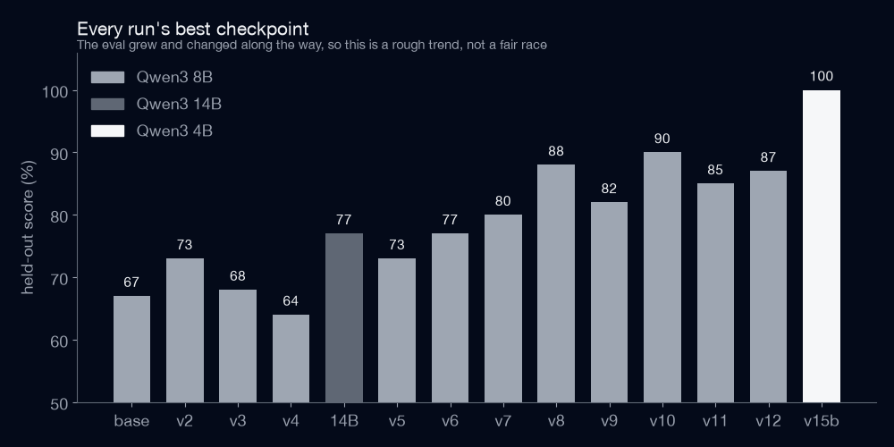
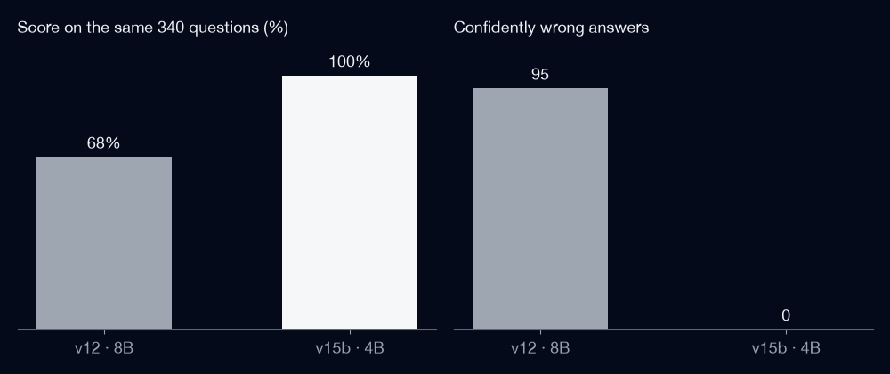

Model: https://huggingface.co/refriderator/jarvis-qwen3-4b
Jarvis tries a small AI model on my Mac before it asks the cloud. Out of the box that model was bad at the job, so I fine-tuned my own. Its job is narrow on purpose: set timers, open apps, arrange windows, do maths with a calculator tool, and say ESCALATE for everything else so Claude can handle it.
Fitting it on a laptop
Everything ran on my 24 GB MacBook, so memory was the real limit. A model’s size is roughly parameters × bits per weight. Qwen3 8B at 4 bits is 8 billion × 0.5 bytes ≈ 4 GB (5 GB as a real file, since some layers keep more bits). The 4B is about 2.5 GB. A 9B model ran out of GPU memory on the very first training step.
Instead of retraining the whole thing I used LoRA. The original weights stay frozen, and each weight matrix W gets a small correction W + BA, where B and A are thin matrices of rank 8. For a 2560 × 2560 matrix that is 8 × (2560 + 2560) ≈ 41,000 trainable numbers instead of 6.5 million, about 0.6%. The whole trained part is a 29 MB file.
Teaching it
I wrote a Python generator that makes thousands of fake conversations (a fake calendar, fake Notion pages, many ways to say “set a timer”), each with the right tool call and answer. To score a model I replay Jarvis’s real tool loop on wordings it never saw in training: 34 kinds of question, 10 of each.

What I learned
- Data beats model size. Same model, same settings, fixed data: four question kinds went from 0/6 to 6/6.
- Small samples are noisy. With 10 cases per kind, one miss is 10 points. At an 80% pass rate the binomial spread is √(0.8 × 0.2 / 10) ≈ ±13%, so picking the best checkpoint on one test flatters it. I score every pick on a second random seed.
- Overfitting is real. Training longer made one run worse (one kind fell from 9/10 to 2/10). Validation loss looked fine the whole time; only the held-out test showed it.
- Wrong but confident is the worst miss. A model that says “I don’t know” just costs a cloud call. One that invents your exam date is a bug. I started counting those separately.
Smaller job, smaller model
The big win was not training harder. It was giving the model less to do. Reminders, alarms and summaries moved to plain code and Apple’s own model, which left four jobs plus knowing when to hand off. On that job a 4B model beat the old 8B on the same test, with half the memory.

100% on my own test does not mean it is perfect, since the test is made by the same kind of generator as the training data. The next step is logging real questions for a week and testing on those.